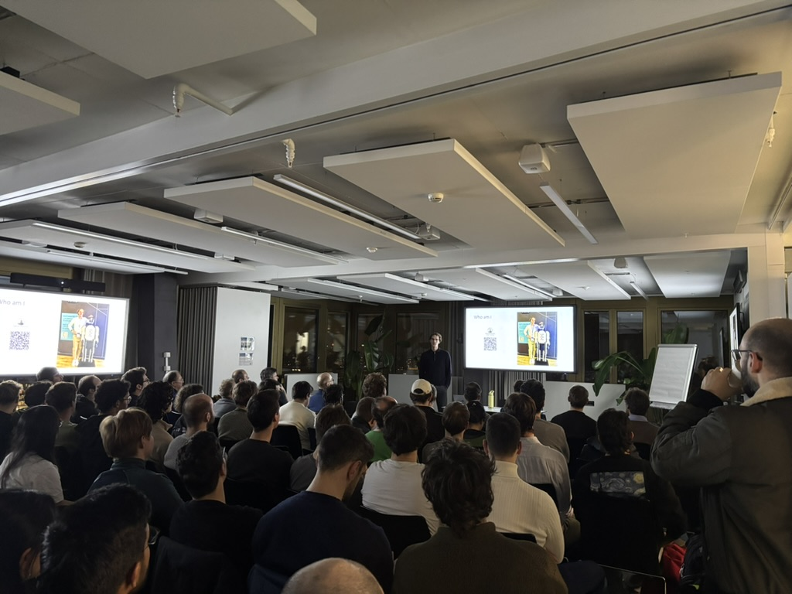
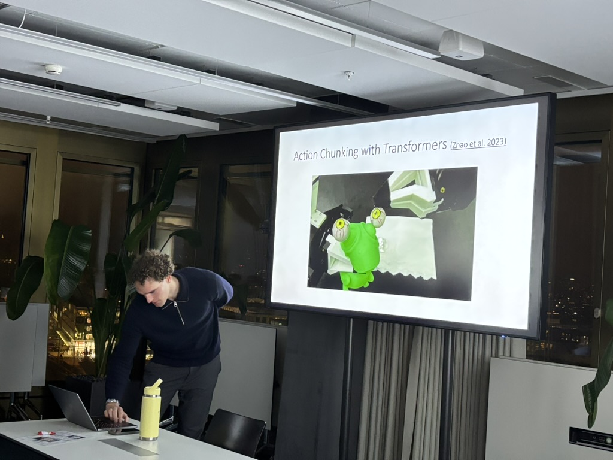

A gentle introduction to Imitation Learning for Dexterous Manipulation @ZurichAI Meetup
December, 2025
In December I gave a talk at the ZurichAI meetup on imitation learning for dexterous manipulation. With no audacity to regard myself as a lecturer, it was an informal introduction to the topic. Framed from the perspective of an industrial robotics engineer working on humanoid manipulation.
This was my first public presentation, and preparing the material turned out to be just as rewarding as giving the talk. Having to explain things from the ground up made me revisit foundations and sharpen my own understanding, and getting to share that interest with a room full of curious people made the whole thing genuinely exciting.
Building a strong robot learning community in Zurich is something I genuinely care about. Although self-supervised learning for manipulation has exploded in popularity worldwide, the academic institutions in Zurich don't seem to have picked it up with the same energy. As I have always tried to keep the spotlight on the topic throughout my professional projects, I am trying to do my part to push things forward.
Big thanks to everyone who attended, and special thanks to Florian Cäsar and the team for organising.
Several people asked where to start if they wanted to dive deeper. The resource I keep recommending is this excellent tutorial by Francesco Capuano: link.

